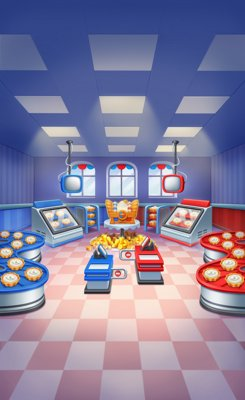

Ảnh chụp màn hình
Đấu xếp hàng hoá 1v1 thời gian thực trên server - stream từng nước đi, tính ELO và huy chương.
Mô tả
- Event PVP là hệ thống đấu xếp hàng hoá 1v1 theo thời gian thực chạy trên server qua socket UDP.
- Hai người chơi vào cùng một màn chơi; mỗi nước đi được stream sang đối thủ để tái hiện trực tiếp.
- Kết quả tính theo điểm và HP trong thời gian giới hạn; thắng để leo ELO và kiếm huy chương (medal).
- Huy chương mở thưởng tiến trình theo mốc và thưởng bảng xếp hạng toàn cục; có nhiệm vụ (quest) và gói pack/bundle.
- Đây là khung lõi được khoác nhiều chủ đề mùa; bản đang chạy có chủ đề Food Duel (Trận chiến Đồ ăn).
Còn thiếu / chưa xác minh
Mở khóa & điểm vào
Mở ở màn 50 (RemoteConfig levelUnlockEventPVP = 50; GetLevelToUnlockEvent đọc từ RemoteConfigController.get_Config). Icon event hiện sớm ở màn 40 (levelShowIconEventPVP = 40; GetLevelToShowIconEvent). Có giai đoạn 'pre-event' 1 ngày trước khi mở (DAYS_PRE_EVENT = 1).
Điểm vào:
- Icon event ở Home (hiện từ màn 40, IsShowIconOpenEvent)
- Popup join/preview (LoadPreview -> scene EventPVPPreview)
- Nút chơi/tìm trận (IsShowButtonJoinEvent, IsShowButtonPlayLevel)
- Thông báo đẩy lịch event (ScheduleNoti, food_duel_noti_title)
Cách hoạt động
- SendCSGetInfoEventPVP() lấy thông tin event; LoadPreview() mở scene EventPVPPreview.
- StartFindMatch() -> CSFindMatchEventPVP ghép đối thủ; nhận blob màn chơi nén base64 (DEFAULT_LEVEL).
- Vào trận: SendCSStartLevelEventPVP trừ giấy phép; mỗi nước đi stream qua SendCSStoreMoveEventPVP, nhận nước đối thủ qua SCStoreMove.
- Kết thúc: SendCSFinishLevelEventPVP -> tính thắng/thua, ELO (GetEloEndGame), huy chương (GetMedalRewardEndGame).
- Ngoài trận: ClaimProgressReward (theo mốc huy chương), ClaimLeaderboardReward (theo hạng, kèm khung), ClaimRewardFromQuest (nhiệm vụ).
Luồng chi tiết theo code
Khi đạt màn 50 và event active, EventPVPDataController.SendCSGetInfoEventPVP() lấy thông tin event (RecevedSCGetInfoEventPVP -> EventPVPInfo). Người chơi mở preview (LoadPreview, scene EventPVPPreview) rồi bấm tìm trận: StartFindMatch()/SendCsFindMatch() gửi CSFindMatchEventPVP; cần đủ 'giấy phép' (GetFoodPermitToFindMatch / permit ObscuredInt). Server ghép đối thủ và trả EventPVPLevelMatchInfo (ReceivedSCFindMatch) gồm blob màn chơi nén base64 (DEFAULT_LEVEL, giải nén CompressingData.DecompressingFromBase64). Vào trận (LoadPVP, scene EventPVP): SendCSStartLevelEventPVP -> ReceivedSCStartLevelEventPVP (DecreasePermit trừ giấy phép, bắt đầu đồng hồ _timeToEndedMatch). Trong trận, mỗi nước đi được lưu và stream qua SendCSStoreMoveEventPVP(steps); đối thủ gửi lại ReceivedSCStoreMoveEventPVP(opponentSteps) để tái hiện. Điểm cập nhật qua SendCSUpdateLevelEventPVP(currentScore); hệ HP: GetMaxHp() = _maxHp/3, GetCurrentHp()/GetOpponentHp(). Kết thúc: SendCSFinishLevelEventPVP -> ReceivedSCFinishLevelEventPVP (EventPVPLevelEndInfo) tính thắng/thua, ELO (GetEloEndGame), huy chương thưởng (GetMedalRewardEndGame). Có xử lý mất kết nối (CheckConnection ping định kỳ, TIME_TO_DISCONNECTED=30s, reconnect). Ngoài trận: huy chương mở thưởng tiến trình theo mốc (EventPVP_Progress_RewardSheet, ClaimProgressReward), thưởng bảng xếp hạng toàn cục theo hạng (EventPVP_Leaderboard_RewardSheet, ClaimLeaderboardReward + khung hồ sơ FrameCollectionController.AddNewFrame), nhiệm vụ (EventPVP_QuestSheet, ClaimRewardFromQuest), và cửa hàng pack/bundle (EventPVP_PackSheet, EventPVP_BundleSheet).
Ảnh chụp màn hình (1)
. Bấm ảnh để phóng to; nhãn UC dẫn tới use case tương ứng.


Phần thưởng
Phần thưởng
(không có)
Phần thưởng
(không có)
Phần thưởng
(không có)
Phần thưởng
(không có)
Phần thưởng theo code
| Ngữ cảnh | Phần thưởng | Evidence |
|---|---|---|
| Cuối trận | ELO huy chương (medal) do server | EventPVPDataController.GetMedalRewardEndGame; EventPVPDataController.GetEloEndGame |
| Mốc huy chương (tiến trình) | ResourceValue/rương theo mốc do server | EventPVPDataController.GetProgressRewardResources; EventPVP_Progress_RewardSheet.Get |
| Bảng xếp hạng toàn cục | ResourceValue theo hạng khung hồ sơ do server | EventPVPDataController.GetLeaderboardReward; FrameCollectionController.AddNewFrame |
| Nhiệm vụ | ResourceValue theo quest do server | EventPVPDataController.ClaimRewardFromQuest; EventPVP_QuestSheet.Get |
Số liệu chính
| Chỉ số | Giá trị | Nguồn |
|---|---|---|
| ||
| ||
| ||
|
Use case (9)
Bấm vào từng use case để mở. Mở/đóng tất cả
UC-01 Mở khóa, hiện icon và pre-event
Các bước- GetLevelToShowIconEvent() = levelShowIconEventPVP (40) -> IsShowIconOpenEvent() hiện icon
- GetLevelToUnlockEvent() = levelUnlockEventPVP (50) -> IsEventUnlocked()
- DAYS_PRE_EVENT=1 mở giai đoạn pre-event trước khi vào
- SendCSGetInfoEventPVP() lấy EventPVPInfo
| Actor | System |
|---|---|
| Trigger | Người chơi đạt màn 40/50 quanh thời điểm event |
| Điều kiện | LevelDataController.Level đủ mức RemoteConfig |
| Kết quả | Icon và trạng thái event hiển thị đúng giai đoạn (pre/active/end) |
| Quy tắc / số liệu | levelShowIconEventPVP=40, levelUnlockEventPVP=50, DAYS_PRE_EVENT=1 |
| Evidence | EventPVPDataController.GetLevelToUnlockEvent; EventPVPDataController.IsShowIconOpenEvent; RemoteConfigController.get_Config |
UC-02 Tìm trận bằng giấy phép (permit)
Các bước- StartFindMatch()/SendCsFindMatch() gửi CSFindMatchEventPVP
- Server ghép đối thủ, trả EventPVPLevelMatchInfo (ReceivedSCFindMatch)
- Giải nén blob màn chơi (CompressingData.DecompressingFromBase64)
- Có thể hủy bằng CancelFindMatch() (CSCancelFindMatchEventPVP)
| Actor | Player |
|---|---|
| Trigger | Người chơi bấm tìm trận trong preview |
| Điều kiện | CanFindMatch() = true và đủ giấy phép (GetFoodPermitToFindMatch) |
| Kết quả | Tìm được đối thủ và màn chơi để đấu |
| Quy tắc / số liệu | Cần đủ permit (ObscuredInt) để tìm trận; ghép cặp do server |
| Evidence | EventPVPDataController.StartFindMatch; EventPVPDataController.ReceivedSCFindMatch; EventPVPDataController.GetFoodPermitToFindMatch |
UC-03 Chơi trận đấu thời gian thực
Các bước- SendCSStartLevelEventPVP -> ReceivedSCStartLevelEventPVP trừ giấy phép (DecreasePermit) và bắt đầu đồng hồ
- Mỗi nước đi lưu AddCurrentStep và stream qua SendCSStoreMoveEventPVP(steps)
- Nhận nước đi đối thủ ReceivedSCStoreMoveEventPVP(opponentSteps) để tái hiện
- Cập nhật điểm SendCSUpdateLevelEventPVP; theo dõi HP (GetMaxHp=_maxHp/3, GetCurrentHp/GetOpponentHp)
- CoroutineUpdateTimeInMatch đếm ngược _timeToEndedMatch
| Actor | Player |
|---|---|
| Trigger | Vào scene EventPVP sau khi ghép trận |
| Điều kiện | Đã nhận màn chơi và đối thủ |
| Kết quả | Hai người chơi đua giải cùng một màn trong thời gian giới hạn |
| Quy tắc / số liệu | maxHp chia 3 (GetMaxHp = _maxHp/3); mỗi nước đi đồng bộ qua UDP; màn chơi do server sinh (EventPVPGenLevelController) |
| Evidence | EventPVPDataController.SendCSStoreMoveEventPVP; EventPVPDataController.GetMaxHp; EventPVPDataController.ReceivedSCStartLevelEventPVP |
UC-04 Kết thúc trận và tính ELO/huy chương
Các bước- SendCSFinishLevelEventPVP -> ReceivedSCFinishLevelEventPVP (EventPVPLevelEndInfo)
- Xác định thắng/thua/đầu hàng (IsPlayerSurrendered/IsOpponentSurrendered)
- GetEloEndGame() cập nhật ELO; GetMedalRewardEndGame() trao huy chương
- OpenPopupEndGame() hiện kết quả (UIPopup_InGame_EventPVP_EndGame)
- LogMatchEnd(endGameState) ghi analytics Event_PvP_FoodDuel_MatchEnd
| Actor | Player |
|---|---|
| Trigger | Hết giờ, hoàn thành, hoặc một bên đầu hàng |
| Điều kiện | Trận đang diễn ra |
| Kết quả | Người chơi nhận/đổi ELO và huy chương; quay về menu |
| Quy tắc / số liệu | ELO và huy chương thưởng do server trả trong EventPVPLevelEndInfo |
| Evidence | EventPVPDataController.ReceivedSCFinishLevelEventPVP; EventPVPDataController.GetEloEndGame; EventPVPDataController.GetMedalRewardEndGame |
UC-05 Nhận thưởng tiến trình theo huy chương
Các bước- GetMedalPoints()/GetMedalRequire(index) đọc mốc từ EventPVP_Progress_RewardSheet
- GetProgressRewardResources(index) lấy thưởng (có thể là ChestType rương)
- ClaimProgressReward(index) nhận; đồng bộ server
- AllProgressRewardClaimed() kiểm tra đã nhận hết chưa
| Actor | Player |
|---|---|
| Trigger | Người chơi đạt đủ mốc huy chương |
| Điều kiện | CanClaimProgressReward() = true |
| Kết quả | Người chơi nhận thưởng theo mốc huy chương |
| Quy tắc / số liệu | Nội dung/mốc do server (EventPVP_Progress_RewardSheet); thưởng có thể là rương (ChestType) |
| Evidence | EventPVPDataController.ClaimProgressReward; EventPVPDataController.GetProgressRewardResources; EventPVP_Progress_RewardSheet.Get |
UC-06 Nhận thưởng bảng xếp hạng toàn cục
Các bước- LoadLeaderboard(page) lấy bảng xếp hạng (CSGetLeaderboardGlobalEventPVP)
- GetLeaderboardReward(posInLeaderboard) đọc từ EventPVP_Leaderboard_RewardSheet
- ClaimLeaderboardReward() -> CSClaimLeaderboardRewardEventPVP
- OnClaimedLeaderboardReward trao thưởng + khung hồ sơ (FrameCollectionController.AddNewFrame)
| Actor | Player |
|---|---|
| Trigger | Event kết thúc, có hạng trên leaderboard |
| Điều kiện | Chưa nhận (IsClaimedRewardLeaderboard() = false) |
| Kết quả | Người chơi nhận thưởng theo hạng toàn cục và khung hồ sơ |
| Quy tắc / số liệu | Thưởng theo hạng do server (EventPVP_Leaderboard_RewardSheet) |
| Evidence | EventPVPDataController.ClaimLeaderboardReward; EventPVPDataController.GetLeaderboardReward; EventPVP_Leaderboard_RewardSheet.Get |
UC-07 Hoàn thành nhiệm vụ (quest)
Các bước- Hành động trong game cập nhật quest (<InitQuestAction>g__UpdateQuest(id, amount))
- GetProgress(index)/GetProgressValue(index) đọc tiến độ từ EventPVP_QuestSheet
- GetRewardQuestState(id) = claimable
- ClaimRewardFromQuest(id) nhận thưởng
| Actor | Player |
|---|---|
| Trigger | Người chơi tiến triển một nhiệm vụ event |
| Điều kiện | Quest chưa claim |
| Kết quả | Người chơi nhận thưởng nhiệm vụ |
| Quy tắc / số liệu | Nội dung quest do server (EventPVP_QuestSheet); quest reset theo thời gian (CheckTimeQuest, GetNextDay) |
| Evidence | EventPVPDataController.ClaimRewardFromQuest; EventPVPDataController.GetProgressValue; EventPVP_QuestSheet.Get |
UC-08 Mua pack / bundle theo phân khúc
Các bước- GetResourcesPack(index) đọc EventPVP_PackSheet (IAP gs_event_pvp_pack_1/2/3)
- GetResourcesBundle(index)/GetAdjustedIndexUserType(index) đọc EventPVP_BundleSheet theo UserType phân khúc
- PurchasePack/PurchaseBundle xử lý mua IAP
- ReceiveFromPack/ReceiveRewardBundle trao thưởng
| Actor | Player |
|---|---|
| Trigger | Người chơi mở shop/offer event |
| Điều kiện | CanBuyAnyBundle()/CanPurchaseBundle(index) = true |
| Kết quả | Người chơi mua gói; nội dung/giá khác theo phân khúc (UserType) |
| Quy tắc / số liệu | Pack IAP gs_event_pvp_pack_*; bundle gs_event_pvp_bundle_X_Y; giá trị/giá do server (Sheet) |
| Evidence | EventPVPDataController.GetResourcesPack; EventPVPDataController.GetResourcesBundle; EventPVP_PackSheet.Get; EventPVP_BundleSheet.Get |
UC-09 Xử lý mất kết nối trong trận
Các bước- CoroutineCheckConnection/CheckConnection ping server định kỳ (SendCSPing, TIME_RESEND_CSPING từ RemoteConfig)
- CheckDisconnected() nếu quá TIME_TO_DISCONNECTED (30s) -> OnEventPVPDisconnected
- Hiện popup reconnect (UIPopup_InGame_EventPVP_Reconnecting) sau timeToShowReconnectEventPVP (5s)
- CheckReconnected() khi nối lại
| Actor | System |
|---|---|
| Trigger | Mạng chập chờn trong lúc đấu |
| Điều kiện | Đang trong trận |
| Kết quả | Trận xử lý mất kết nối, cho phép reconnect hoặc kết thúc |
| Quy tắc / số liệu | TIME_TO_DISCONNECTED=30s; timeIntervalPingPVP=1; timeToShowReconnectEventPVP=5 (RemoteConfig) |
| Evidence | EventPVPDataController.CheckConnection; EventPVPDataController.CheckDisconnected; EventPVPDataController.TIME_TO_DISCONNECTED |
Cấu hình (12)
Gộp mọi nguồn: const trong code, JSON mặc định trong Resources, bảng static, storage key, AB test, cờ server.
| Nguồn | Key | Kiểu | Giá trị | Ý nghĩa | Nơi định nghĩa |
|---|---|---|---|---|---|
| code const | DAYS_PRE_EVENT | int | 1 | Số ngày giai đoạn pre-event trước khi mở | EventPVPDataController |
| code const | TIME_TO_DISCONNECTED | float | 30 | Ngưỡng giây coi là mất kết nối | EventPVPDataController |
| code const | key_info / key_resource / key_bundle / key_quest / key_reward | string | event_pvp_info / event_pvp_resource / event_pvp_bundle / event_pvp_quest / event_pvp_reward | Khóa lưu từng phần dữ liệu event | EventPVPDataController |
| code const | Item ids | string | pack, bundle, event_pvp_quest, medal, event_pvp_reward_progress, event_pvp_reward_leaderboard | Định danh loại vật phẩm/thưởng | EventPVPDataController |
| json default | levelUnlockEventPVP | int | 50 | Màn mở khóa event (mở ở màn 50) | RemoteConfig (remoteconfig_defaults.tsv) |
| json default | levelShowIconEventPVP | int | 40 | Màn bắt đầu hiện icon event | RemoteConfig (remoteconfig_defaults.tsv) |
| json default | timeIntervalPingPVP | int | 1 | Nhịp ping giữ kết nối (giây) | RemoteConfig (remoteconfig_defaults.tsv) |
| json default | timeToShowReconnectEventPVP | int | 5 | Số giây trước khi hiện popup reconnect | RemoteConfig (remoteconfig_defaults.tsv) |
| config class | EventPVPData | class | infoData, resourceData, questData, bundleData, rewardData | Gộp toàn bộ dữ liệu event | EventPVPData |
| code const | GetMaxHp | int | _maxHp / 3 | HP tối đa hiển thị bằng maxHp chia 3 | EventPVPDataController.GetMaxHp |
| static array | DEFAULT_LEVEL | string | blob màn chơi mặc định nén base64 (DEFAULT_LEVEL_NAME='default_client') | Màn fallback khi chưa nhận màn từ server | EventPVPDataController |
| server info | EventPVP_PackSheet / EventPVP_BundleSheet / EventPVP_QuestSheet / EventPVP_Progress_RewardSheet / EventPVP_Leaderboard_RewardSheet | Sheet | nội dung pack/bundle/quest/thưởng; giá trị do server | Các bảng cấu hình nạp qua get-config | EventPVP_*Sheet.Get |
Backend / server
| Command | Chiều | Mục đích |
|---|---|---|
CSGetInfoEventPVP / SCGetInfoEventPVP | client↔server | Lấy thông tin event |
CSFindMatchEventPVP / SCFindMatchEventPVP | client↔server | Tìm/ghép trận 1v1 |
CSStartLevelEventPVP / SCStartLevelEventPVP | client↔server | Bắt đầu màn đấu, trừ giấy phép |
CSStoreMoveEventPVP / SCStoreMoveEventPVP | client↔server | Stream nước đi hai bên |
CSUpdateLevelEventPVP / SCUpdateLevelEventPVP | client↔server | Cập nhật điểm/HP |
CSFinishLevelEventPVP / SCFinishLevelEventPVP | client↔server | Kết thúc trận, tính ELO/medal |
CSExitLevelEventPVP / CSForceExitLevelEventPVP | client→server | Thoát/đầu hàng |
CSGetLeaderboardGlobalEventPVP / CSClaimLeaderboardRewardEventPVP | client↔server | Bảng xếp hạng toàn cục và nhận thưởng hạng |
Giao diện (UI)
| Element | Class | Mục đích |
|---|---|---|
| Scene preview | EventPVPPreviewController | Xem thông tin và tìm trận |
| Màn đấu trong game | EventPVPInGameController / EventPVPGenLevelController | Chơi trận và sinh màn |
| Popup kết quả / versus / reconnect | UIPopup_InGame_EventPVP_EndGame / _Versus / _Reconnecting | Hiển thị đấu và kết quả |
| Thanh HP / powerup / điểm | UI_InGame_EventPVP_InfoBar / _PowerUpBar / _ResourceBar | HUD trong trận |
Analytics (3)
| Event | Tham số | Khi nào |
|---|---|---|
Event_PvP_FoodDuel_Open | Current_Level_Event, Elo, Leaderboard_Top | khi mở event |
Event_PvP_FoodDuel_MatchEnd | Elo, endGameState, Quit | khi kết thúc trận |
Event_PvP_FoodDuel_MatchSink | Hammer, Refresh, Replace (powerup đã dùng) | ghi powerup trong trận |
Storage keys
event_pvp event_pvp_info event_pvp_resource event_pvp_bundle event_pvp_quest event_pvp_reward
Chưa đọc được / ghi chú
- Màn chơi, ghép cặp, ELO, HP và toàn bộ thưởng do server; client chỉ có blob màn fallback DEFAULT_LEVEL.
- Nội dung pack/bundle/quest/mốc thưởng/thưởng hạng đều là *Sheet nạp qua get-config (giá trị do server).
- Chủ đề hiển thị hiện tại là Food Duel (analytics Event_PvP_FoodDuel_*, noti food_duel_*); xem thêm feature FoodDuel.
- Event PvP thời gian thực cần màn 50 + đối thủ online nên không chụp live được trên máy test.
Tính năng liên quan
Trận chiến Đồ ăn (Food Duel) Đấu Quyền Vương (Punch Clash) Siêu giải đấu (Super League) Cửa hàng (Shop) FrameCollection
Nguồn đã đọc
- features/EventPVPDataController.md
- features/EventPVP_PackSheet.md
- features/EventPVP_BundleSheet.md
- features/EventPVP_QuestSheet.md
- features/EventPVP_Progress_RewardSheet.md
- features/EventPVP_Leaderboard_RewardSheet.md
- PseudoC/Assembly-CSharp/EventPVPDataController.c
- facts/config/remoteconfig_defaults.tsv